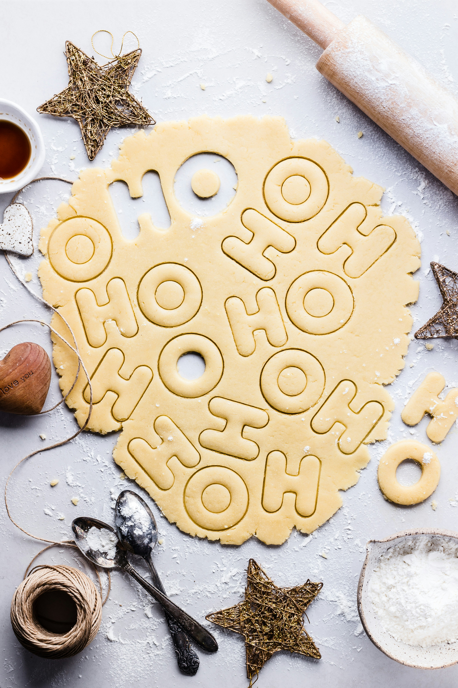

Butter Cookies Recipe

Photo by Bruna
Branco on Unsplash
Description
describe recipe
Ingredients
- 226g Butter
- 140g Sugar, white
- 4g Salt
- 2 Egg Yolks
- 15g Vanilla Extract
- 280g Flour, all-purpose
- up to 60g Milk
- 3g Almond Extract, optional
Steps
- Using the paddle attachment on a stand mixer, cream together butter, sugar, and salt on mid-high until light
and
fluffy.
- Mix in egg yolks, vanilla extract, and (optional) almond extract until creamy.
- Add flour and mix until crumbly. If dough is too crumbly add up to 60g milk (add as little as possible to
minimize spreading during baking).
- Divide the dough into 2 portions. Flatten each into a 1" disk. Wrap tightly in plastic wrap and chill for at
least 30 minutes in the fridge (up to 3 days).
- Roll out your dough to about 1/4" and cut into your desired shapes (roll only a lightly floured surface or
between sheets of parchment/plastic wrap).
- Bake 12 to 16 minutes (until cookies are golden brown on the bottom). Remove from oven and let cool for 5
minutes on sheet pan then transfer to a wire rack to finish cooling.
See All Recipes